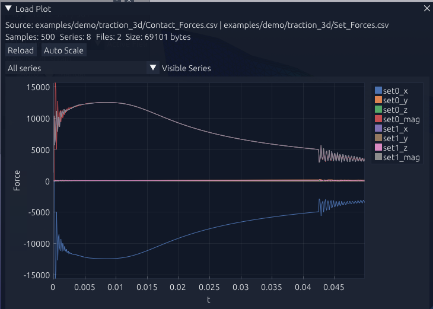
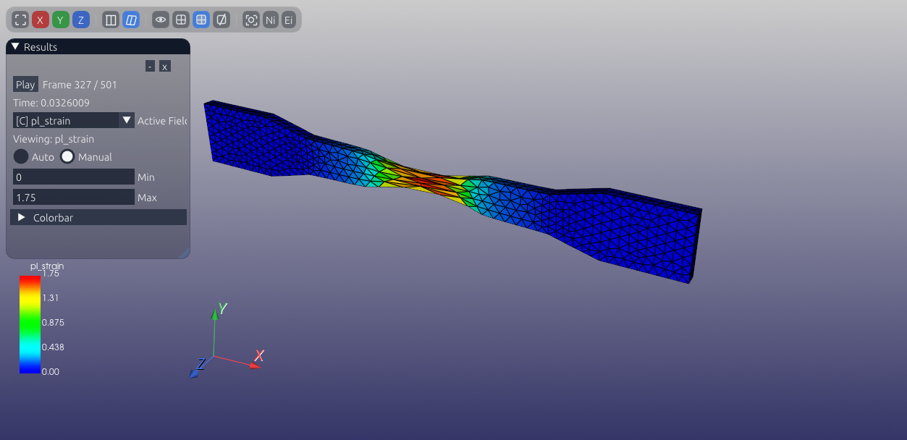

Validation Case: 2D/3D Tensile Test
This benchmark was carried out with the explicit solver as a tensile test in both 2D and 3D. The imposed velocity is 1 m/s, intentionally exaggerated to keep the case short, and a manual mass scaling factor of 100 is introduced through the material density.


Model setup
- The benchmark is solved with the explicit formulation.
- Two versions are considered: a 2D model and a 3D model.
- The loading is an imposed tensile velocity of 1 m/s.
- The loading rate is intentionally high to make the benchmark computationally practical in explicit dynamics.
- Manual mass scaling is applied with a factor of 100 by increasing the material density.
Material model
This case uses a generic aluminum material with a Hollomon plastic law and the following properties:
- id: Solid
- type: Hollomon
- const: [386.796e6, 0.154]
- density0: 27000.0
- thermalHeatCap: 87.50
- thermalCond: 190.0
- youngsModulus: 68.9E9
- poissonsRatio: 0.3
- yieldStress0: 190.4E6
What this benchmark checks
- Explicit tensile response under a prescribed loading speed
- Consistency between 2D and 3D tensile simulations
- Robustness of plastic flow with a Hollomon hardening law
- Influence of manual mass scaling on a simple validation case
Notes for interpretation
Because the loading speed is set to 1 m/s and the density is scaled manually, this benchmark should be read as a numerical validation case for the explicit implementation rather than as a quasi-static physical test.